A blog about wintering over at the South Pole Station
Captain's Web Log(11) - 8 July 2016 - What do you wear outside?
We hit -100 F for the first time a couple of weeks ago (and again this week), and we just passed midwinter, so in honor of the occasion I thought I'd write a bit about what I wear to brave the polar winter.
My gear is a mix of stuff that USAP issued to me at the clothing distribution center in Christchurch (and which I have to return when I pass back through Christchurch on my way out of here) and stuff that
belongs to me.
So... what does one wear to walk 3/4 mi to work in -100 F?
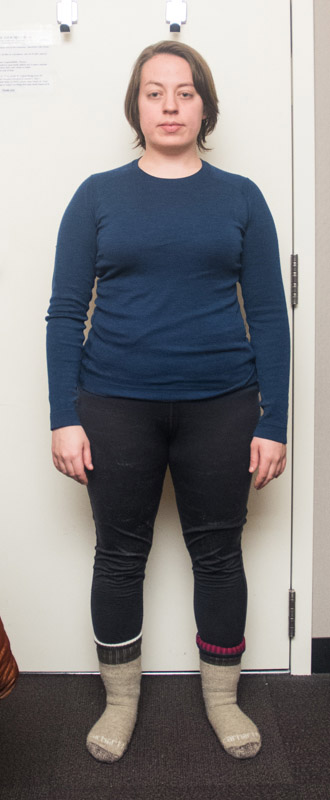
I start out with a 200 weight merino t-shit and pants, plus two pairs of socks: first, a pair of midweight wool-cotton blend socks, and a second pair of merino "mountaineering weight" socks.
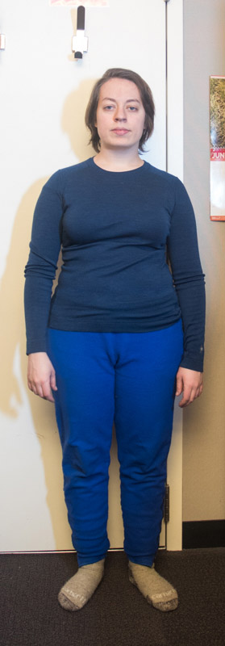
Next up, thick fleece pants.
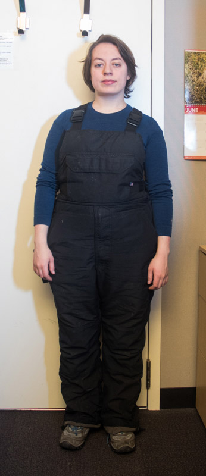
Then I put on some insulated overalls and my boots. Most of the time I just wear my regular old hiking boots (like in the picture). Believe it or not, with the two pairs of socks,
they keep me warm enough for the whole walk as long as it's around -80 F or warmer. If it's colder than that, or if I'm going to be outside for a longer time, I have some much bigger, more serious-business boots issued by USAP.
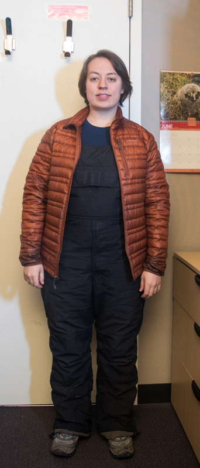
Lightweight down jacket.
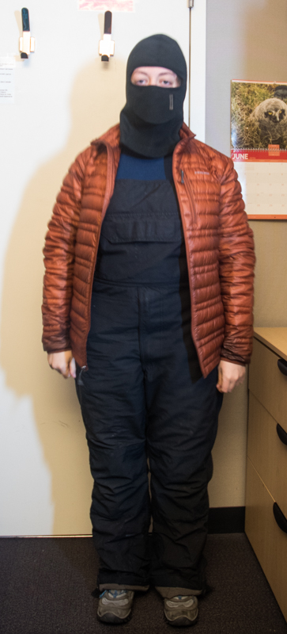
Balaclava. Do not confuse with baclava, else you'll be sticky and frostbitten (but probably pretty happy otherwise).
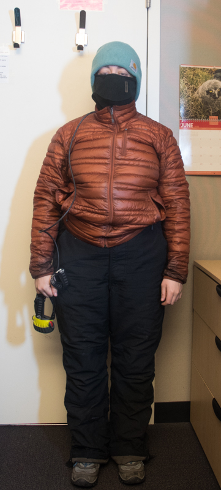
Next, I add a thick acrylic hat and tuck the balaclava into the neck of the jacket.
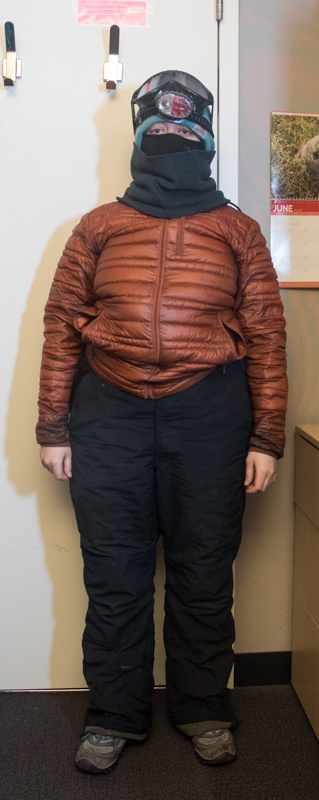
Here, I've added my headlamp (with the battery pack tucked into the chest pocket of the overalls), goggles, and a loose neck gaiter to help keep the wind from blowing in through the mouth hole of the balaclava or through any gaps around the neck.
I almost never wear the goggles on my face (they fog up really quickly in these kinds of temperatures, so it's not worth it unless it's really windy), but I always keep them on my head just in case (plus they
help keep my hood up).
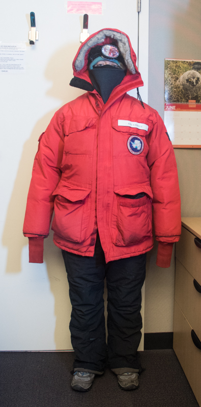
Finally, the finishing touch: the big, poofy down coat known affectionately by Antarcticans as 'Big Red'. If I'm just walking, I pull my hands inside the sleeves rather than wearing gloves, but I always keep
gloves and glove liners in the pockets in case I need them.
That's pretty much it. If it's really really cold (even for the South Pole in winter), sometimes I additionally wear a thin zip-up fleece under the orange down jacket. I also have a different coat I wear (instead of Big Red) for outdoor 'dirty work,' like when
we grease the elevation gears on the telescope.
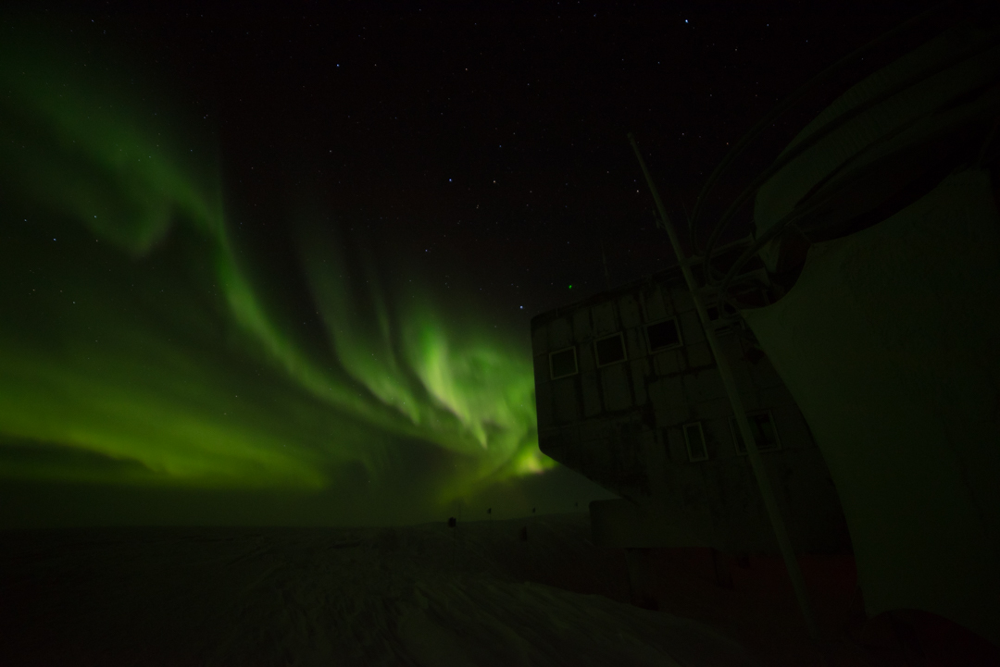
Bonus: auroras from July 4 (video works in Chrome and some other browsers)
And some photos of the Milkyway from July 3 (you can eve see the LMC in a couple of them):
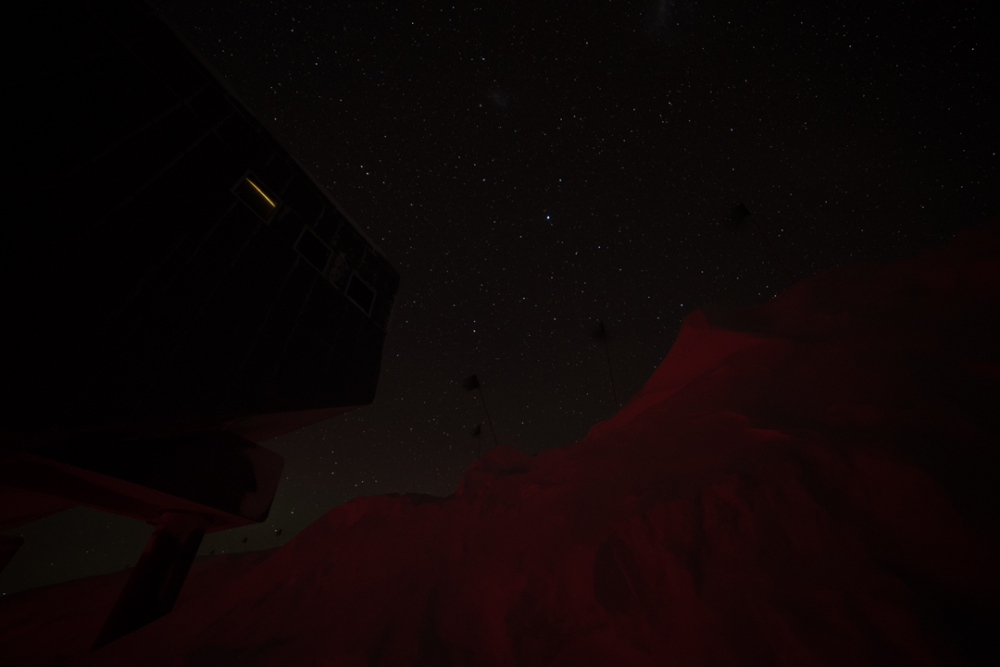
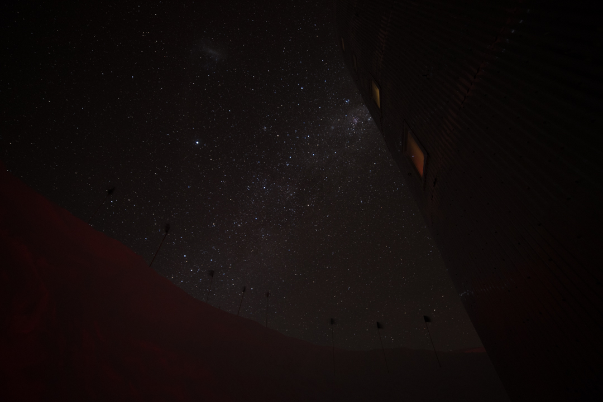
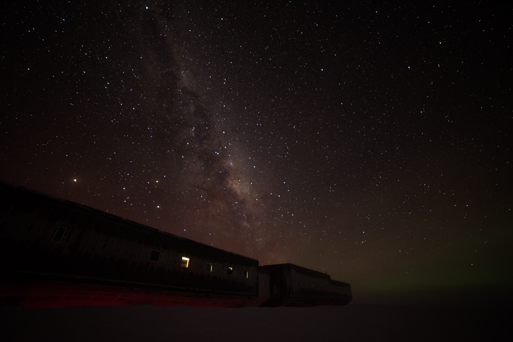
Current conditions
Temperature: -81F/-63C
Windchill: -112F/-80C
Wind: 6.9 kts Grid 126
Barometer: 672.7 mb (10,905 ft/3,324m)
Sun elevation below the horizon: 22.5 degrees (We are still in 'true night', but the sun is now rising.)
And just for Lena: The moon is currently 11.5 degrees below the horizon and rising.